Low-Cost Desktop CNC Milling Machine for PCB Fabrication
Autodesk Inventor | PartWorks 3D | ShopBot Desktop | Epilog Laser Cutter
Eagle 7.7 | Surface-Mount Soldering | C Programming | AVRDUDE | Serial Comm on CoolTerm
Final Project for 4.140 (MIT Graduate-Level Class), December 2016
Building a CNC Mill from Scratch
As an electrical engineer, building circuit boards is much preferred to the painful process of using solderless breadboards. I teach an introductory electrical engineering class for Harvard SEAS and the big clunky awkwardness of breadboards is a pain to troubleshoot constantly. Yet when I look online for milling machines, the cheapest legitimate ones I can find still cost on the order of $500. The raw materials for a CNC milling machine aren't too difficult to procure so my goal for the final project is to build a sturdy milling machine specifically for the purpose of milling PCBs.
For materials selection, I will plan to build the machine primarily out of MDF with metal supports where necessary. MDF is extremely cheap and one of the tougher options that is still easy to machine. I will possibly use acrylic for some parts, but I don't like the strength of thin acrylic compared to MDF (acrylic seems to snap very easily). Home Depot suppliers large 2'x4' sheets of 1/4" MDF so most of the structural components of my design will be based on that. I'll use press-fit to assemble laser cut parts because that works extremely well from my experience in week 2.
One aspect of this project is keeping the entire milling machine to under $100. I document the cost of things below:
| Item | Item Cost | Quantity | Price |
|---|---|---|---|
| 2x4 1/4" MDF | $7.45 | 1 | $7.25 |
| Bipolar Stepper Motors (x3) | $15.95 | 3 | $47.85 |
| Copper PCB Boards | $0.60 | 2 | $1.20 |
| 1/4"-20x36" Steel threaded rod | $5.24 | 1 | $5.24 |
| 3/8" x 36" Aluminum Rod | $5.97 | 1 | $5.97 |
| 1/2" x 36" Aluminum Rod | $7.21 | 1 | $7.21 |
| Hand Drill 555 Motor Chuck | $19.29 | 1 | $19.29 |
| TOTAL | $94.01 |
As I work through this project, I'm keeping a working list of the tasks left to do in the three categories listed below:
- Base for Y axis motion
- Vertical part for X axis motion
- Module for Z axis motion
- Base table/milling platform
- Front side storage platform
Mechanical Design
- Stepper motor drivers
- Motor command receive code
- Button input to LCD Screen
- FTDI to computer connection
- Driving the spindle motor
- True CNC functionality
Electrical Design
- Networking between different motors
- Running toolpath files
Programming
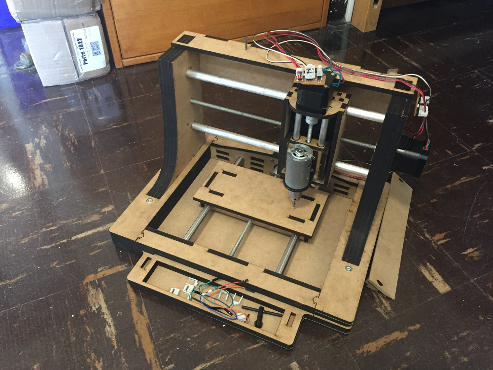
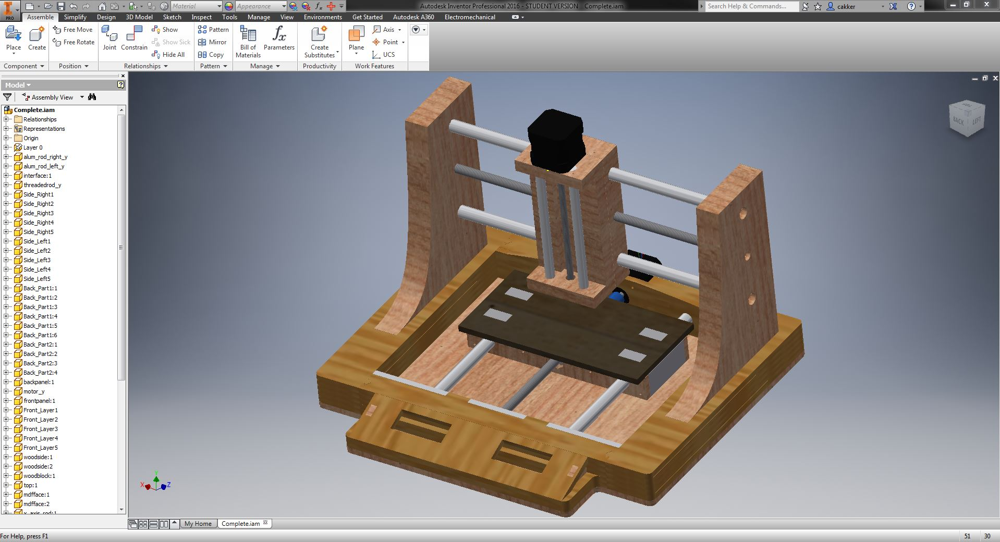
I'll be using two types of raw material for the body construction of the mill: 1/4" MDF and 2x8 cedar board. These two materials are extremely inexpensive and available at Home Depot in large quantities. The MDF will be used for more precision structure while the cedar board will be used for load-bearing structure. The MDF can be cut on the laser cutter whereas any cuts made to the cedar board will be either by miter saw (rough cuts) or by milling machine (precision cuts).
To support the various components of the platform that will be moving, I've rigged up a simple screw drive mechanism for the X, Y, and Z axis using solid aluminum rods as the rails to stabilize the axis and minimize friction. I imagine I'll be cutting the through-holes with a drill press. The X and Y axis are more heavy duty and are built with 1/2" diameter solid aluminum rod rails and a 3/8"x 16 threaded rod. To keep the assembly more compact for action along the Z axis, the rails are 3/8" solid aluminum rod and the threaded rod is 1/4" x 20. Both of the threaded rodes will interface to the motion block by precision drilled holes and an inset that allows an appropriate flange nut to be press-fit and then superglued into the block of wood.
I started off thinking that part of the machine would be machined out of 2x8 cedar wood, but the thermal flex qualities of this type of wood made me very suspicious of it. I left a block of wood near my window one night when it got extremely cold and I woke up to find that it had cracked nearly in half. I'm not sure how homes are built out of this stuff. I modified my original CAD to make the entirety of the structure made from quarter inch MDF. This proved very simple because all of my wood pieces were dimensioned to be multiples of 0.25" anyways.
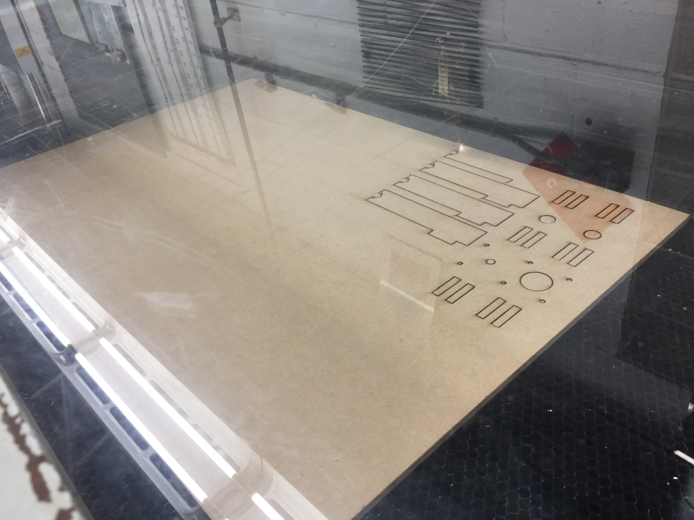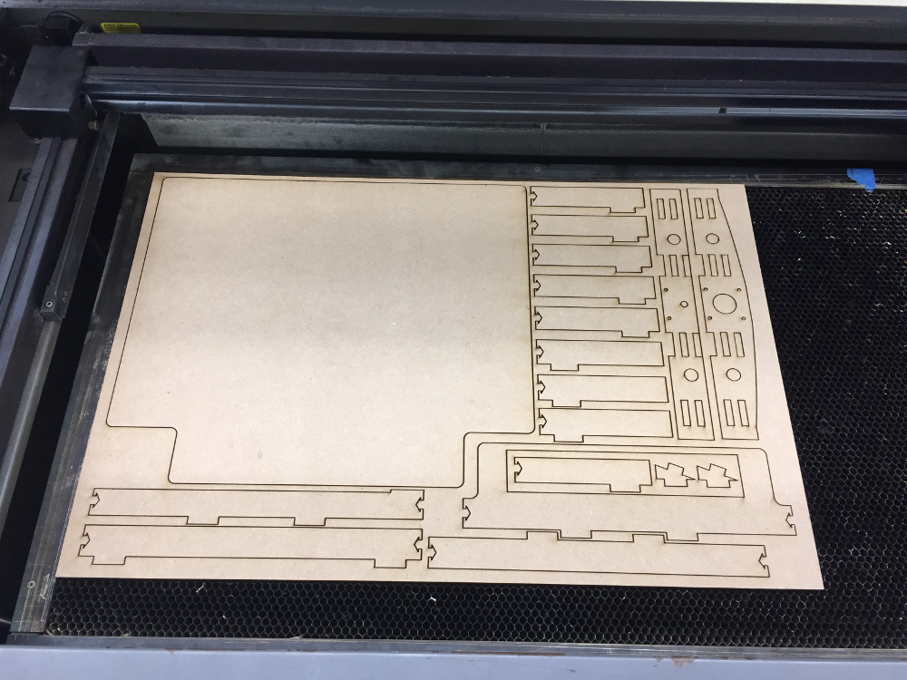
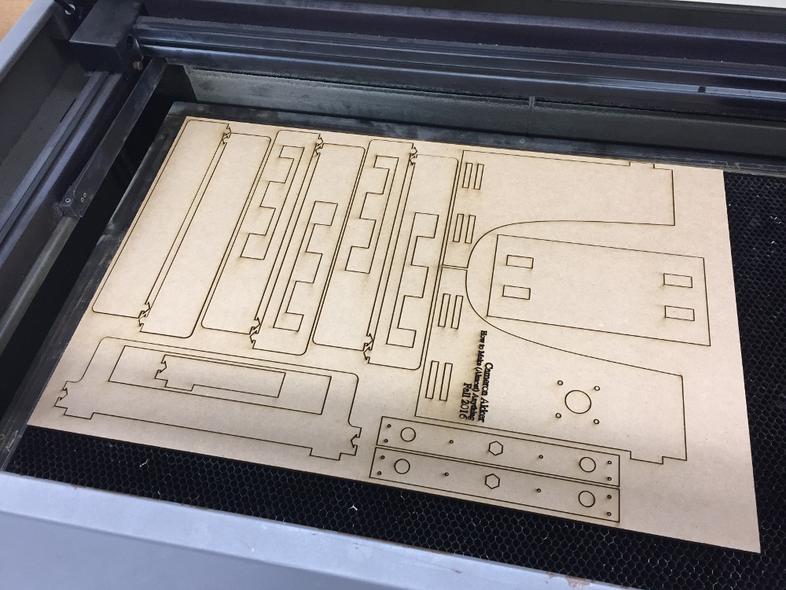
It took three sheets of 24"x18" MDF to fully cut out the milling machine. This is very impressive actually - the entirety of the milling machine body was made from a sheet of wood that only cost $7.42 at Home Depot. That sure helps to keep material costs down.
To cut 1/4" MDF on the laser cutter, I used the same settings as I used during my week 2 laser cut project. In summary, 100% power and 1.3% speed on the 100 Watt laser is enough to clearly cut through the MDF. The sheets that I cut were relatively densely packed and took up to 45 minutes to cut in one case.
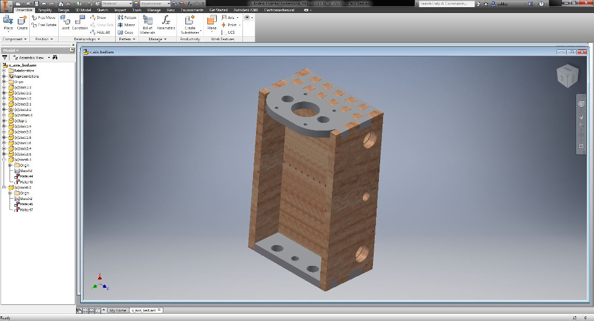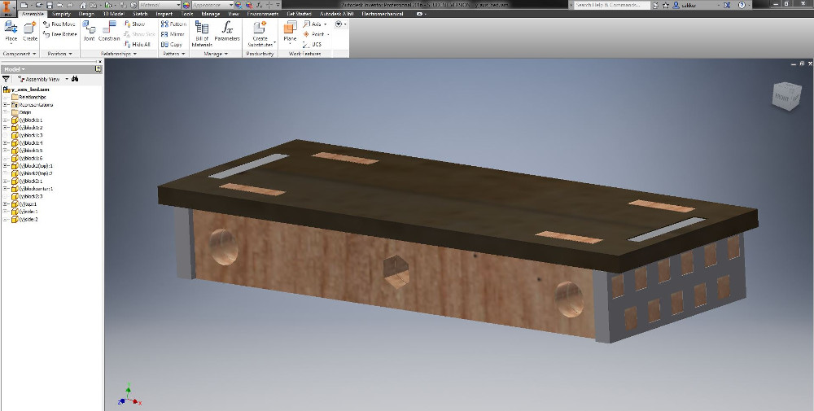

The three pieces I'm the proudest of making are the three beds for the X, Y, and Z axis. Originally, these pieces were going to be milled from wood, but the thermal expansion and contraction of the wood make me weary of the possibility of misaligned holes just from bringing the project through the cold weather. I opted for the safer alternative which was to build up each of the beds constructively from pieces of MDF sandwiched together.
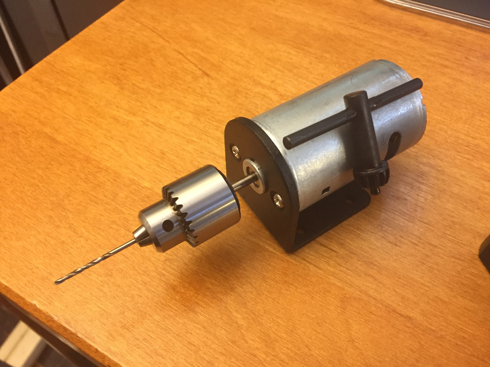
The motor I ordered can be found at this link. It runs at 12V and provides enough power to make simple cuts. The motor comes with a mounting bracket that I was able to make in CAD and produce a mounting platform for..
Here is a picture of a cut I made in a piece of copper PCB board using a 1/8" end mill powering the motor at 12V..
It took three sheets of 24"x18" MDF to fully cut out the milling machine. This is very impressive actually - the entirety of the milling machine body was made from a sheet of wood that only cost $7.42 at Home Depot. That sure helps to keep material costs down.
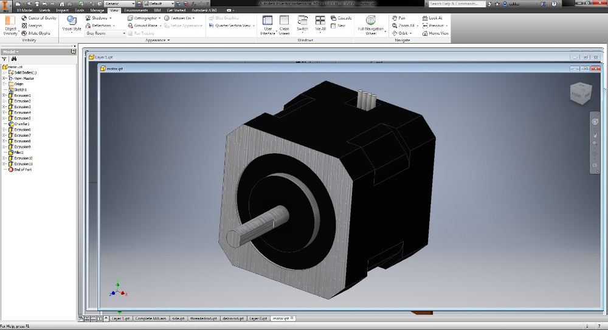I took some calipers to the motors I was using and built a fully reconstructed CAD model for the motor in Autodesk Inventor. If anyone is looking to use the motor model in the future, here is the .ipt file for download.
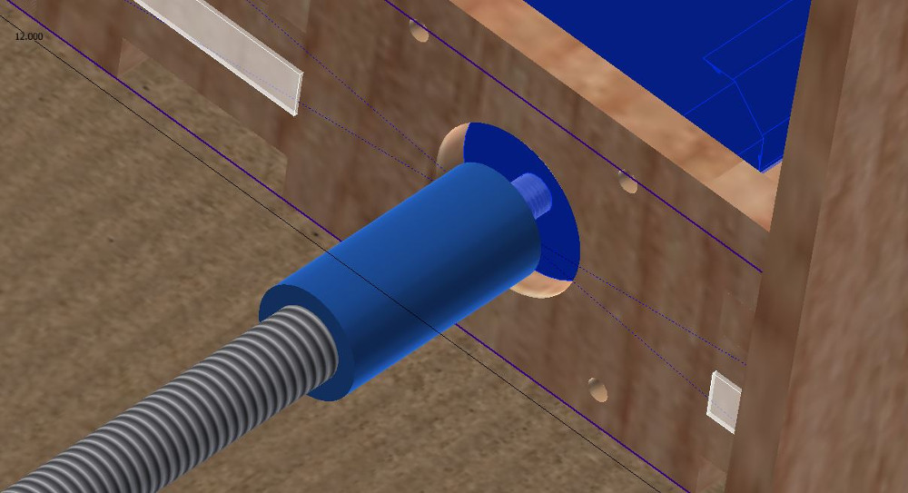The motors I used are standard Pololu stepper motors that I found in lab. Surprisingly, these three motors made up the majority of my costs for this project. Each motor cost $16 and I used three of them to finish my project. The motors are very straightforward and only require 4 wires to operate.
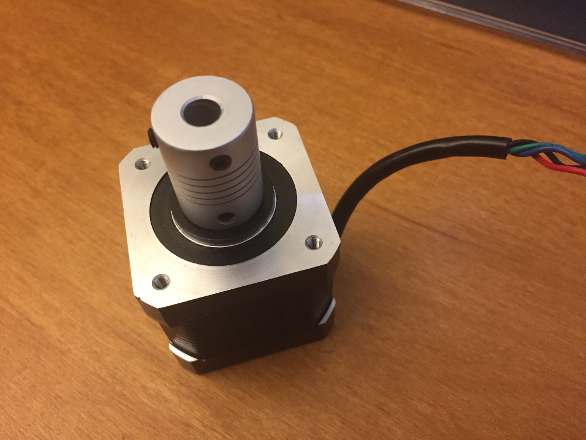I was unable to find a 5mm to 1/4" shaft connector in the shop, so I originally tried printing one. The resolution on the Ultimaker wasn't good enough to get the threads on the inside of the motor (or allow the set screw to hold with any strength) so I tried alternatives. I found a 6mm to 1/4" coupler which was great other than the fact my motor shafts were 5mm. I found a 5mm to 8mm coupler, but nothing I have is 8mm. I thought about using the lathe to drill out the 8mm hole to 3/8", but that proved too difficult. In the end, I just used some shim to make the 6mm to 1/4" coupler work with my 5mm shaft.
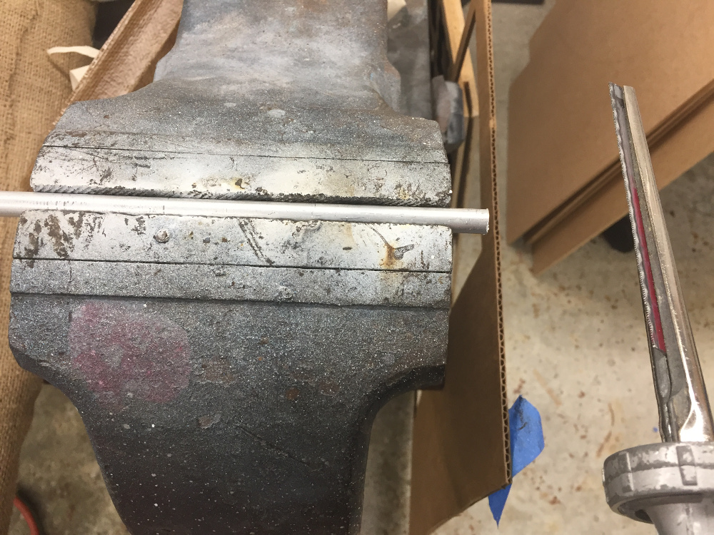There was no saw in the shop suitable for cutting round material down to size, so I ended up sticking it in a vice and manually hacksawing it. Took a lot of arm strength that I did not have. Hopefully it was a healthy endeavor.

This early build of the milling machine had a somewhat fatal flaw - I included two nuts on either end of each bed platform. As opposed to one nut, this cause the friction on the shaft to increase significantly. I did an entire redesign of all the bed platforms to allow for a little more slack in the line. Instead of two nuts on either side, I simplified the design to include just one nut housed in the center of the block assembly.
There is one piece of the milling machine that I actually had to mill - and that is the hidden storage compartment. This was originally meant to be a housing for the LCD screen back when this project was ambitious - now it functions solely as a storage compartment. The angled cuts would not work on the laser cutter and thus I needed to make this piece on the milling machine.

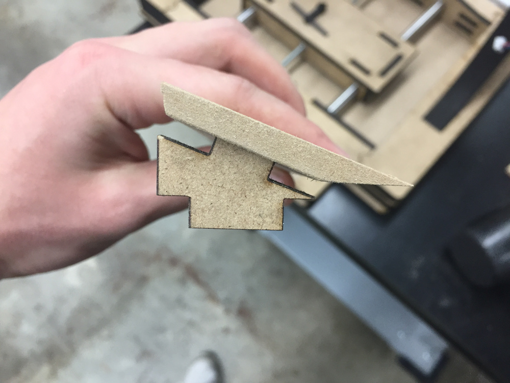
See my stepper motor driver board page for information about the stepper motors that control this whole rig.
All of the images below are from earlier builds of the milling machine. I went through 3 full "assemblies" in Autodesk Inventor before I finally found one I was altogether satisfied with. The remnants of past attempts have a number of failings/inelegancies that made them obsolete.
`